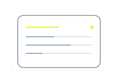
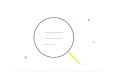
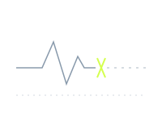
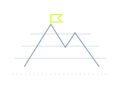

ATLAS
Components — the language, built. Semantic tokens only.
One primary per view. The hover glow on the primary is the only box-shadow in the system.
Shown on every statement line.
Reference must match ^TRX-[0-9]{6}$ — a word beside the colour, always.
A state is a tint plus a word. The dot repeats the tint; the word carries the meaning.
| Entry | Counterparty | State | Amount | Balance |
|---|---|---|---|---|
| TRX-014021 | Harbour Freight | Settled | −1,240.00 | 84,116.40 |
| TRX-014022 | Meridian Power | Pending | −96.20 | 84,020.20 |
| TRX-014023 | Vantage Payroll | Settled | −18,400.00 | 65,620.20 |
| TRX-014024 | Kestrel Ltd | Failed | +2,150.00 | 65,620.20 |
Rows separate with hairlines, never stripes. Hover is the accent tint. Figures are mono, tabular, right-aligned.
Tabs navigate; the segmented control filters. The segmented control is solid — never glass in glass.
One flagged item per view in production. All four states shown here for the specimen only.
The dialog is solid, not glass — it must be readable over anything.

No entries yet. Connect a feed or add the first entry by hand.

Nothing matches. Clear a filter or widen the range.

Feed interrupted. Last row received 14:02. Retrying every 30s.

First run. Import the opening balance to begin the ledger.
Hairline drawings in the slate of the interface, one chartreuse accent each. Never photographic, never emoji.